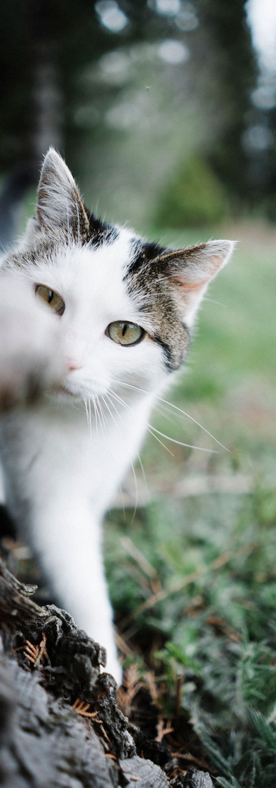

Urlaub für Singleeltern
In den Schulferien gehört die Mühle den Alleinerziehenden und ihren Kindern – Ferien in Gemeinschaft, mitten in der Natur.
Gemeinsam statt allein
Alleinerziehende tragen viel – im Alltag und oft auch im Urlaub. In der Mühle muss niemand alles alleine stemmen: Die Kinder finden schnell Spielkameraden, die Großen finden Zeit zum Durchatmen und gute Gespräche am Abend.
Morgens gemeinsames Frühstück in der Stube, danach zieht es die Kinder meist direkt zu den Pferden und Hasen. Tagsüber wandern, baden, in die Berge fahren – oder einfach den ganzen Tag auf der Spielwiese und am Bach bleiben. Abends Lagerfeuer, Spiele oder einfach Ruhe am Holzofen, während die Kinder längst Freunde geworden sind.
Getragen wird das alles vom gemeinnützigen Verein „Wertacher Mühle, Sonnenhof e.V.“ – seit über dreißig Jahren.

Die Tiere sind mit dabei
Für viele Kinder das Größte: Pferde striegeln, Hasen füttern und die Katzen im Haus besuchen.



Termine und freie Plätze
Die Ferienzeiten sind schnell ausgebucht – fragt am besten frühzeitig an: 08365 / 1628 oder Wertachermuehle@web.de.